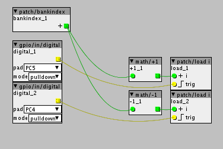
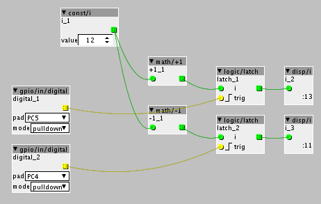

Get it! Finally it was a silly, but important /  I don´t know how it disappeared.
I don´t know how it disappeared.
Thank you very much for your help.
Best!

Get it! Finally it was a silly, but important / I don´t know how it disappeared.
Thank you very much for your help.
Best!
Hi,
I am trying to switch patches from SD using this as control object:

PC5 works fine. It goes up a number and I can listen next patch and, when it finishes, it starts again. But PC4 go directly to patch number 1 no matter where I am in the index.
What am I missing?
Interested in bumping this for a solution as well. I use a logic/counter with two buttons via incoming midi CC, and only the one that counts up seems to work, but not downward.
Yes, it is weird because with s1 and s2 it works propertly. Lets hope someone can shed ligth on it. In the meantime, could you share how you implement the logic/counter? Thanks
Apologies, I haven't read the full thread but there is a lot of good info in this thread about patch changing
I personally use patchnames via strings to load patches. It is MattilynMattroes' version of patchloading, and is very effective. You essentially have an init patch that loads on start up containing all your patches. Then in every patch you have a button/controller etc that refers back to that patch and loads it. I use it with an Oled which is fantastic, but the approach is not limited to Oled.....in this thread I go into alot of detail, and give examples about how to do it....
The reason I mention it here is that I personally find it the most approachable, least complicated way of dealing with patches YMMV.
You could try a logic/counter2 object it has increment and decrement inlets:
(http://www.privatepublic.de/public/factory-objectlist.html#o957830652)
Oh and just a really obvious thought, please forgive me if this has already occurred to you, but with troubleshooting I guess it's best to start with the basics, are the gpio's inverted, ie with a display bool attached does pressing the button trigger green light or the opposite.
It seems there is some problem with bankindex object interpreting "-1". I have tried this simulation and it goes up and down correctly from constant number.

But with bankindex, even using debounce objects, it only counts up but not down. Doesn´t matter where index you are always go to 1.
Though I haven't tested it personally, I would recommend Reubenfinger's advice of trying to switch by file name with patch/load fn, depending on how you name your files, you could use a logic/counter 2 attached to a string/indexed for yourpatch000.axp, yourpatch001.axp etc. or the counter multiplexed with some string/c objects attached if the names are different. The Axoloti is really reliable for recalling files by name with regards to samples and tables. It shouldn't be any different for patch names.
If you try this method, remember not to make your patch names longer than 8 characters. Not sure if that includes the .axp part. It goes against my examples above, but that was just for clarification.
Thanks hitachii. Control object was working nice for me using S1 and S2, but since I have not confortable access to them in enclosure and patchindex doesn´t work with GPIO, I am afraid that I will have to take that path. Lets try...
Update on this because I hadn't read Matt's method all the way. Ignore the .axp part of my last comment, that was incorrect. Basically, follow his directions step by step. It works really well.
These are the few details that I had to test out, at no fault to the instructions, I'm just easily confused